Taesoo Kim
Taesoo Kim
→ OS is an Interface b/w two layers, user and hardware
→ OS provides Abstraction to applications
→ Open problems: sandboxing for security, scalability on manycore, etc.
Also, you (have to) have lots of free time …
→ Experimental course, lots of bumps expected :)
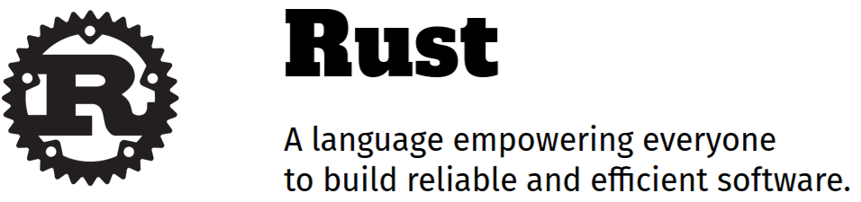
→ Check out https://www.rust-lang.org/
→ So you can continue to learn OS even after graduation!
I’m doing a (free) operating system (just a hobby, won’t be big and professional like gnu) for 386(486) AT clones. – Linus Torvalds
→ Our goal is to make sure you don’t give up, and actually sit and do the coding!
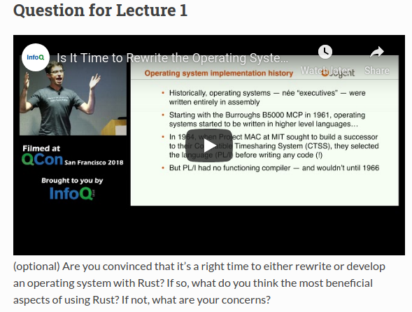
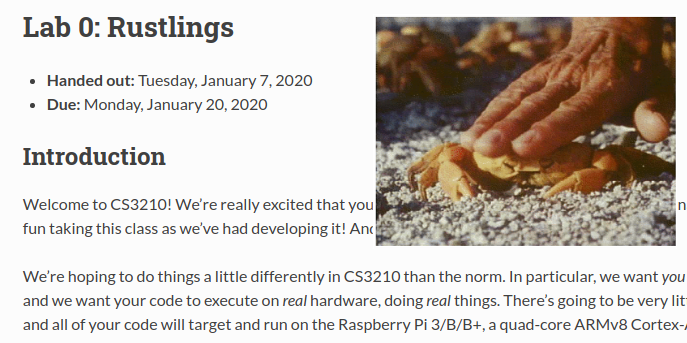
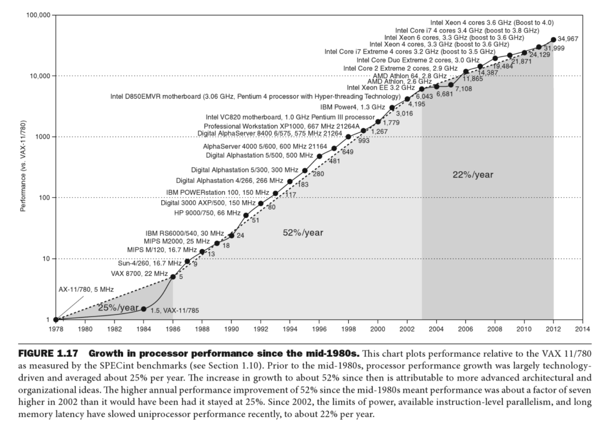
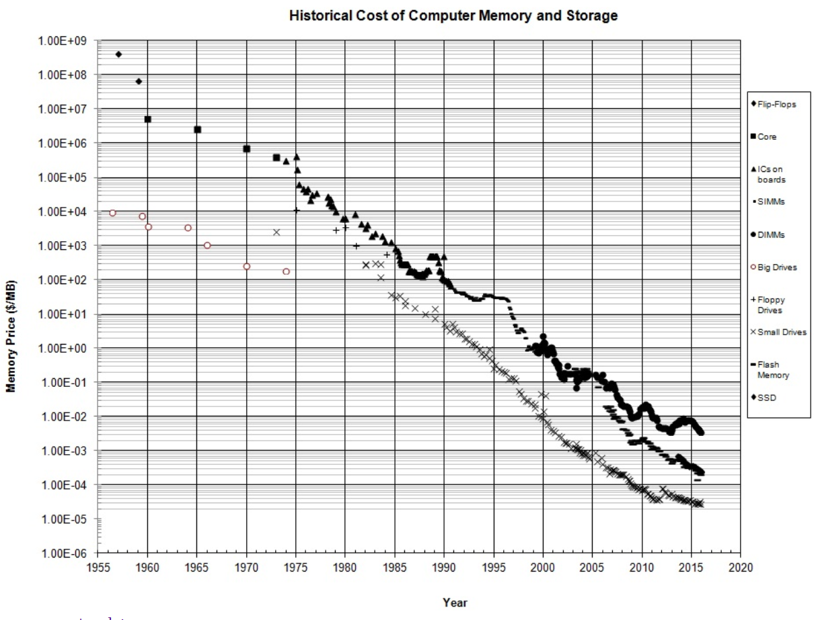
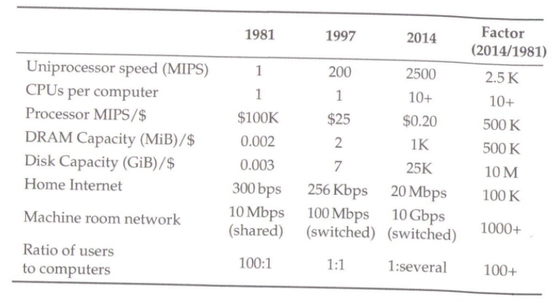
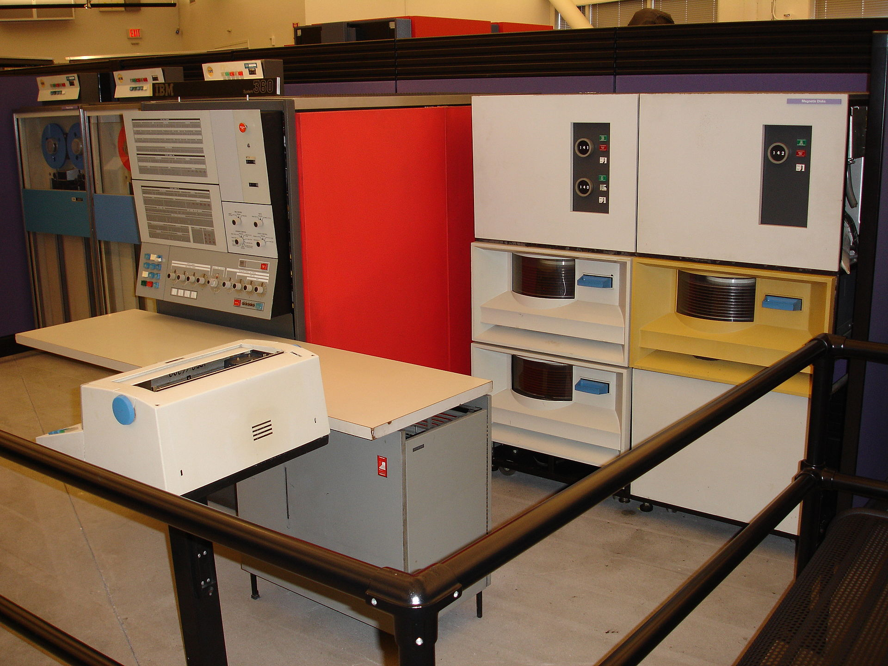
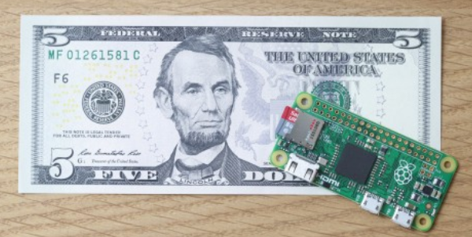
OS (software) seamlessly adopts to slow/fast, small/large hardware!
Seriously. Binary compatibility is so important that I do not want to have anything to do with kernel developers who don’t understand that importance. If you continue to pooh-pooh the issue, you only show yourself to be unreliable. Don’t do it. – Linus
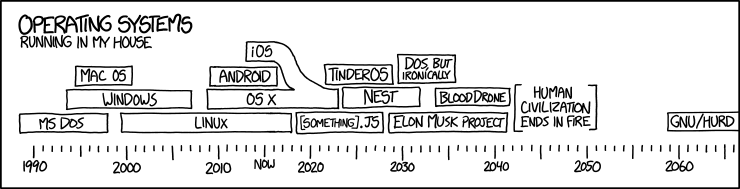
What language is used for all commodity OSes (e.g., Linux, Windows)?
Ref. Wikipedia
→ Why not A, B, and C (e.g., Python, JavaScript, C++, etc)?
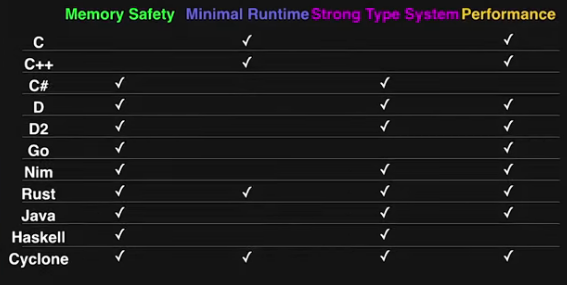
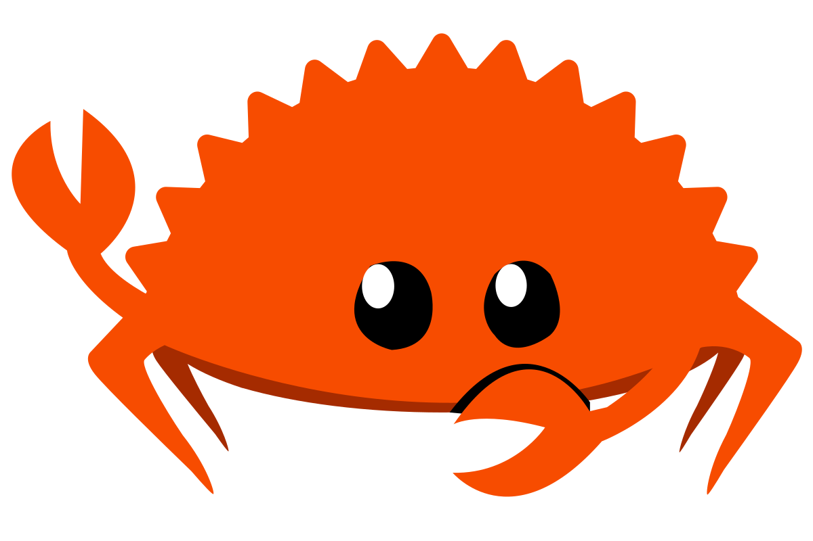
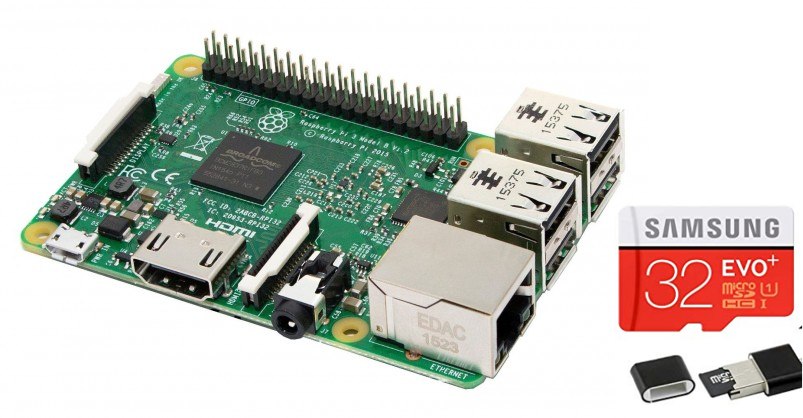
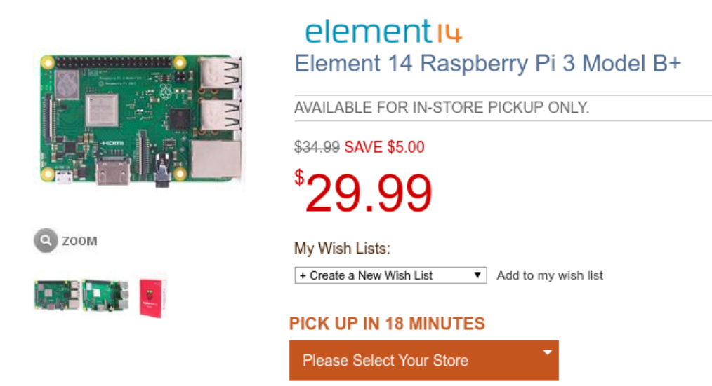